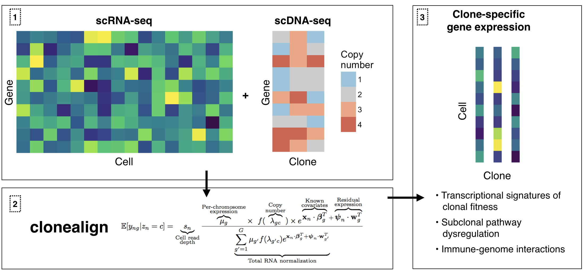
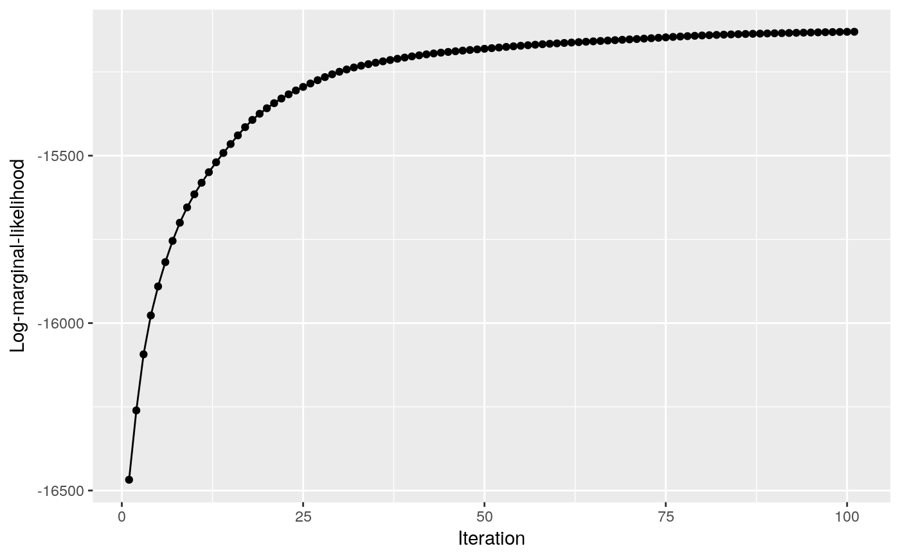
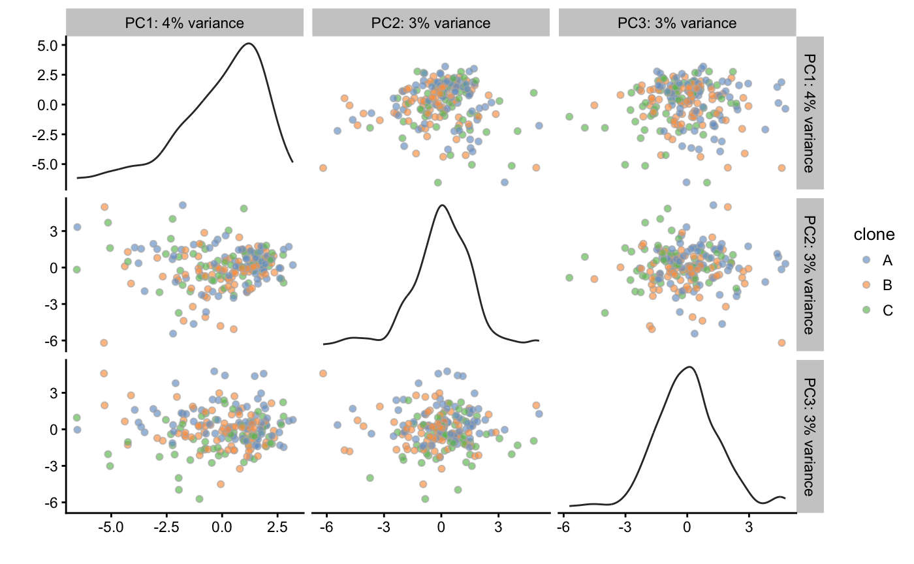
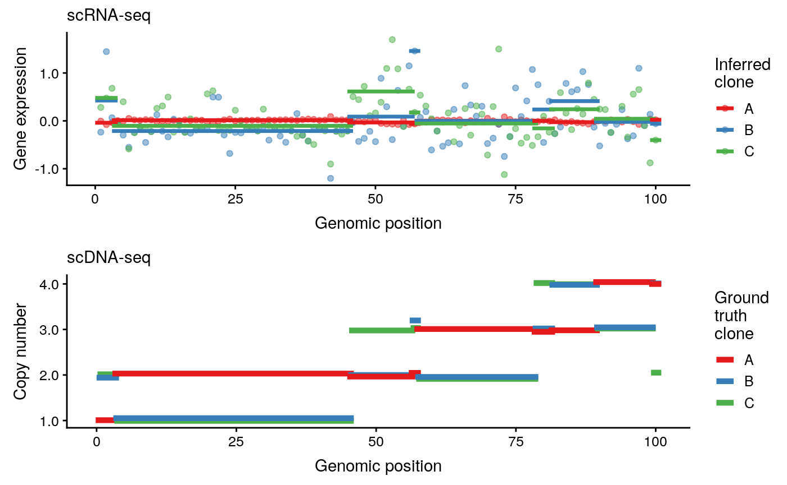

introduction_to_clonealign.Rmdclonealign assigns cells measured using single-cell RNA-seq to their clones of origin using copy number data. This is especially useful when clones are inferred from shallow single-cell DNA-seq, in which case the copy number state of each clone is known, but the precise SNV structure is unknown.
To assign cells to clones, clonealign makes the assumption that
\[ \text{gene expression} \propto \text{number of gene copies} \]
This is demonstrated in the figure below.

Mathematically we have an \(N \times G\) matrix \(Y\) of raw gene expression counts (from RNA-seq) for \(N\) cells and \(G\) genes, where \(y_{ng}\) is the counts to gene \(g\) in cell \(c\). We also have a \(G \times C\) matrix \(\Lambda\) of copy number variation for \(C\) clones, where \(\lambda_{gc}\) is the copy number of gene \(g\) in clone \(c\). We introduce a clone-assigning categorical variable \(\pi_n\) for each cell, where
\[ \pi_n = c \text{ if cell $n$ on clone $c$} \]
then clonealign models the conditional expected counts in a gene and cell as
\[ E[y_{ng} | \pi_n=c] = \frac{\lambda_{g,c} f(\mu_g) e^{\psi_n \cdot w_g}}{ \sum_{g'}\lambda_{g',c} f(\mu_{g'}) e^{\psi_n \cdot w_{g'}}} s_n \]
where \(s_n\) is a cell-specific size factor, \(\mu_g\) is the per-chromosome expression (normalized so that \(\mu_1 = 1\) for model identifiability), \(f\) is a function that maps copy number to a multiplicative factor of expression, and \(\psi\) and \(w\) are cell and gene specific random effects. The noise distribution is assumed to be negative-binomial. Inference is performed using expectation-maximization to find maximum likelihood estimates of the clone assignments \(\pi_n\) and of all other model parameters.
clonealign is built upon Google’s Tensorflow using the Tensorflow R package provided by Rstudio. To install tensorflow, run
install.packages("tensorflow")
library(tensorflow)
install_tensorflow()You can confirm the installation succeeded by running
sess = tf$Session()
hello <- tf$constant('Hello, TensorFlow!')
sess$run(hello)For more details see the Rstudio page on tensorflow installation.
clonealign can then be installed using the devtools package via
devtools::install_github("kieranrcampbell/clonealign")By default, clonealign requires two inputs:
SingleCellExperiment, SummarizedExperiment or cell by gene matrix
data.frame, DataFrame or matrix
Bundled with the package is an example SingleCellExperiment for 100 genes and 200 cells:
library(clonealign)
data(example_sce)
example_sce
#> class: SingleCellExperiment
#> dim: 100 200
#> metadata(0):
#> assays(1): counts
#> rownames(100): gene_1 gene_2 ... gene_99 gene_100
#> rowData names(3): A B C
#> colnames(200): cell_1 cell_2 ... cell_199 cell_200
#> colData names(0):
#> reducedDimNames(0):
#> spikeNames(0):This has raw integer counts in the assays slot as required for input to clonealign:
assay(example_sce, "counts")[1:5, 1:5]
#> cell_1 cell_2 cell_3 cell_4 cell_5
#> gene_1 0 0 0 0 0
#> gene_2 0 0 0 0 0
#> gene_3 1 1 1 0 0
#> gene_4 0 0 0 0 0
#> gene_5 1 0 0 1 0The CNV data is stored in the rowData of the SingleCellExperiment for 3 clones (A, B, and C) and crucially the same genes as the expression data:
cnv_data <- rowData(example_sce)[, c("A", "B", "C")]
stopifnot(nrow(cnv_data) == nrow(example_sce)) # Make sure genes match up
head(cnv_data)
#> DataFrame with 6 rows and 3 columns
#> A B C
#> <integer> <integer> <integer>
#> 1 1 2 2
#> 2 2 1 1
#> 3 3 2 2
#> 4 3 2 2
#> 5 2 2 3
#> 6 2 1 1The model is fitted with a basic call to clonealign, which prints the (relative change in) log-likelihood for each iteration (this can be turned off by setting verbose = FALSE):
cal <- clonealign(example_sce, cnv_data)
#> Removing 0 genes with low counts
#> Creating Tensorflow graph...
#> clonealign inference completeprint(cal)
#> A clonealign_fit for 200 cells, 100 genes, and 3 clones
#> To access clone assignments, call x$clone
#> To access ML parameter estimates, call x$ml_paramsWe can plot the marginal likelihood values to ensure convergence:
qplot(seq_along(cal$log_lik), cal$log_lik, geom = c("point", "line")) +
labs(x = "Iteration", y = "Log-marginal-likelihood")
The maximum likelihood estimates of the clone assignments can be access through the clone slot:
clones <- cal$clone
table(clones)
#> clones
#> A B C
#> 68 75 57This can easily be added to the SingleCellExperiment for visualization with scater:
example_sce$clone <- clones
example_sce <- normalise(example_sce)
#> Warning in .local(object, ...): using library sizes as size factors
plotPCA(example_sce, ncomponents = 3, colour_by = "clone")
The clone assignments in clones can then be used for the desired downstream analysis, such as differential expression or SNV analysis.
The plot_clonealign function can be used to check the sanity of the fitted clones by ensuring that gene expression does correlate to the inferred copy number. For this we require the input SingleCellExperiment, copy number matrix, and clone assignments. Note that the SingleCellExperiment requires columns in rowData corresponding to the chromosome, start and end position of each feature (gene). These can conveniently be gathered using the getBMFeatureAnnos function in scater, e.g.
sce <- getBMFeatureAnnos(sce, filters = "ensembl_gene_id",
attributes = c("ensembl_gene_id", "start_position", "end_position"),
feature_symbol = "hgnc_symbol",
feature_id = "ensembl_gene_id",
dataset = "hsapiens_gene_ensembl")For now we’ll set these to made-up values:
gene_position <- as_data_frame(cnv_data) %>%
mutate(gene = seq_len(nrow(cnv_data))) %>%
arrange(A, B, C) %>%
mutate(position = seq_len(nrow(cnv_data))) %>%
arrange(gene) %>%
.$position
#> Warning in as.data.frame(x, row.names = NULL, optional = optional, ...):
#> Arguments in '...' ignored
rowData(example_sce)$chromosome <- "1"
rowData(example_sce)$start_pos <- gene_position
rowData(example_sce)$end_pos <- gene_positionWe can then plot the expression estimates using the plot_clonealign function:
plot_clonealign(example_sce, cal$clone, cnv_data,
chromosome = "1",
chr_str = "chromosome",
start_str = "start_pos",
end_str = "end_pos")
#> Joining, by = "ensembl_gene_id"
#> Joining, by = c("clone", "state")
#> Joining, by = c("state", "clone")
where the *_str identifies the columns of rowData(example_sce) to look for the chromosome names and feature start and end positions.
Inference is performed using the EM algorithm which uses the log marginal likelihood to monitor convergence. This is controlled using the rel_tol_em parameter. When the difference
\[ \Delta L = \frac{L_{\text{new}} - L_{\text{old}}}{|L_{\text{old}}|} \] falls below rel_tol_em, the EM algorithm is considered converged. The maximum number of iterations to acheive this is set using the max_iter_em parameter.
The M-step uses Adam optimization (Kingma and Ba (2014)) which is controlled by three parameters:
learning_rate the learning raterel_tol_adam the relative difference in the \(Q\)-function value below which the M-step will be considered convergedmax_iter_adam the maximum number of Adam iterations to perform at each M-stepNote that if the parameter values are close to the stationary point the marginal log-likelihood may decrease if the optimization step size doesn’t decrease fast enough. This will generally lead to valid results, but decreasing the learning_rate parameter may help.
The object returned by a call to clonealign contains a clone slot for the maximum likelihood (ML) clone assignment for each cell. The ML estimates of the other parameters can be found in the cal$ml_params slot:
names(cal$ml_params)
#> [1] "clone_probs" "mu" "s" "phi"The slot clone_probs gives the probability that each cell is assigned to each clone:
head(cal$ml_params$clone_probs)
#> A B C
#> [1,] 0.0485277474 0.5841722 0.3673017
#> [2,] 0.0001137902 0.3025147 0.6973726
#> [3,] 0.0275536180 0.2143368 0.7581062
#> [4,] 0.0966688618 0.7310576 0.1722717
#> [5,] 0.0001145939 0.1038677 0.8960181
#> [6,] 0.1605246812 0.6634352 0.1760405while mu and phi give the maximum likelihood estimates of the \(\mu\) and \(\phi\) parameters from the model.
sessionInfo()
#> R version 3.4.2 (2017-09-28)
#> Platform: x86_64-apple-darwin15.6.0 (64-bit)
#> Running under: macOS Sierra 10.12.6
#>
#> Matrix products: default
#> BLAS: /Library/Frameworks/R.framework/Versions/3.4/Resources/lib/libRblas.0.dylib
#> LAPACK: /Library/Frameworks/R.framework/Versions/3.4/Resources/lib/libRlapack.dylib
#>
#> locale:
#> [1] en_CA.UTF-8/en_CA.UTF-8/en_CA.UTF-8/C/en_CA.UTF-8/en_CA.UTF-8
#>
#> attached base packages:
#> [1] parallel stats4 stats graphics grDevices utils datasets
#> [8] methods base
#>
#> other attached packages:
#> [1] bindrcpp_0.2 clonealign_0.99.0
#> [3] dplyr_0.7.4 scater_1.6.0
#> [5] ggplot2_2.2.1 SingleCellExperiment_1.0.0
#> [7] SummarizedExperiment_1.8.1 DelayedArray_0.4.1
#> [9] matrixStats_0.53.0 Biobase_2.38.0
#> [11] GenomicRanges_1.30.1 GenomeInfoDb_1.14.0
#> [13] IRanges_2.12.0 S4Vectors_0.16.0
#> [15] BiocGenerics_0.24.0 BiocStyle_2.6.1
#>
#> loaded via a namespace (and not attached):
#> [1] bitops_1.0-6 fs_1.2.2
#> [3] bit64_0.9-7 RColorBrewer_1.1-2
#> [5] progress_1.1.2 httr_1.3.1
#> [7] rprojroot_1.3-2 tools_3.4.2
#> [9] backports_1.1.2 R6_2.2.2
#> [11] vipor_0.4.5 DBI_0.7
#> [13] lazyeval_0.2.1 colorspace_1.3-2
#> [15] tidyselect_0.2.4 gridExtra_2.3
#> [17] prettyunits_1.0.2 bit_1.1-12
#> [19] compiler_3.4.2 xml2_1.2.0
#> [21] desc_1.1.1 labeling_0.3
#> [23] bookdown_0.5 scales_0.5.0.9000
#> [25] tfruns_1.3 pkgdown_1.0.0.9000
#> [27] commonmark_1.4 stringr_1.3.0
#> [29] digest_0.6.15 rmarkdown_1.9
#> [31] XVector_0.18.0 base64enc_0.1-3
#> [33] pkgconfig_2.0.1 htmltools_0.3.6
#> [35] limma_3.34.0 rlang_0.2.0
#> [37] rstudioapi_0.7 RSQLite_2.0
#> [39] shiny_1.0.5 bindr_0.1
#> [41] jsonlite_1.5 tensorflow_1.5
#> [43] RCurl_1.95-4.10 magrittr_1.5
#> [45] GenomeInfoDbData_0.99.1 Matrix_1.2-11
#> [47] Rcpp_0.12.16 ggbeeswarm_0.6.0
#> [49] munsell_0.4.3 reticulate_1.6
#> [51] viridis_0.4.0 whisker_0.3-2
#> [53] stringi_1.1.7 yaml_2.1.18
#> [55] edgeR_3.20.1 MASS_7.3-47
#> [57] zlibbioc_1.24.0 rhdf5_2.22.0
#> [59] plyr_1.8.4 grid_3.4.2
#> [61] blob_1.1.0 shinydashboard_0.6.1
#> [63] crayon_1.3.4 lattice_0.20-35
#> [65] cowplot_0.9.2 locfit_1.5-9.1
#> [67] knitr_1.20 pillar_1.2.2
#> [69] rjson_0.2.15 reshape2_1.4.3
#> [71] biomaRt_2.34.1 XML_3.98-1.9
#> [73] glue_1.2.0 evaluate_0.10.1
#> [75] data.table_1.10.4-3 httpuv_1.3.5
#> [77] purrr_0.2.4 tidyr_0.7.2
#> [79] gtable_0.2.0 assertthat_0.2.0
#> [81] mime_0.5 xtable_1.8-2
#> [83] roxygen2_6.0.1 viridisLite_0.2.0
#> [85] tibble_1.4.2 AnnotationDbi_1.40.0
#> [87] beeswarm_0.2.3 memoise_1.1.0
#> [89] tximport_1.6.0